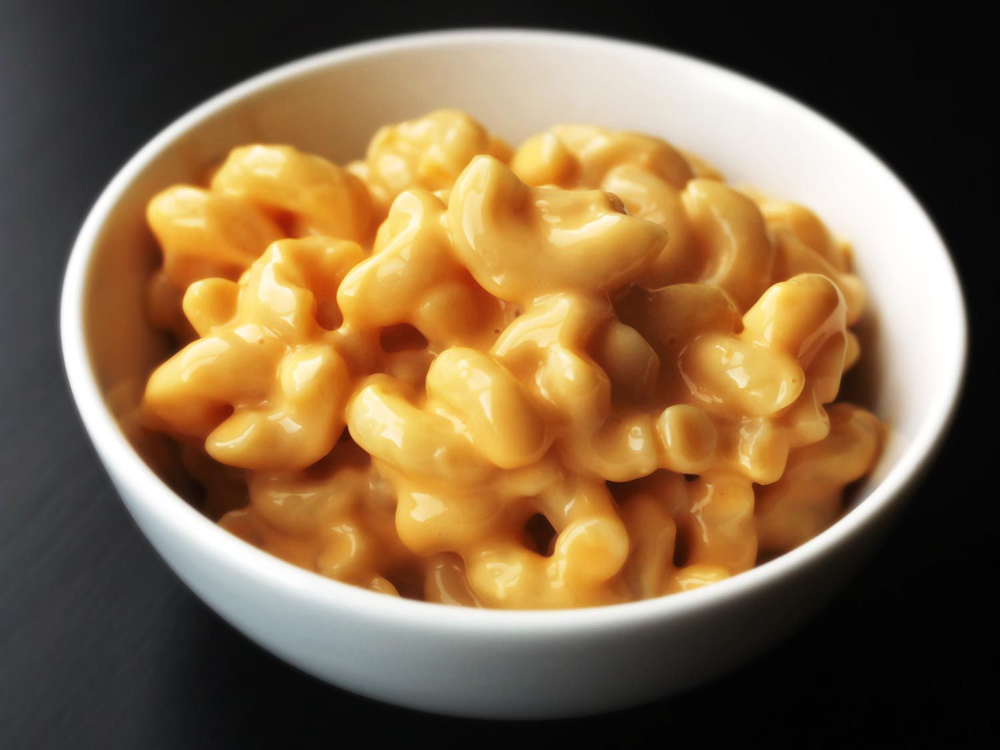

The following includes one of my favourite recipes to follow for mac and cheese!
<
Mac and Cheese to this day is my favourite food as it brings back childhood memories! SO here is how you create it for yourself!
Ingredients:
- 1 pound elbow macaroni
- Kosher salt
- One 12-ounce can evaporated milk
- 2 large eggs
- 1 teaspoon ground mustard
- 1 pound extra-sharp cheddar, grated
- 8 ounces American cheese, cut into 1/2-inch cubes
- 1 tablespoon cornstarch
- 8 tablespoons (1 stick) unsalted butter, cut into 4 chunks
- Place the macaroni in a large saucepan and cover it with salted water by 2 inches. Bring to a boil over high heat, stirring occasionally to keep the pasta from sticking. Cover the pan, remove from the heat, and let stand until the pasta is barely al dente, about 8 minutes.
- Meanwhile, whisk together the evaporated milk, eggs, and mustard in a bowl until homogeneous. Toss the cheeses with the cornstarch in a large bowl until thoroughly combined.
- When the pasta is cooked, drain it and return it to the saucepan. Place over low heat, add the butter, and stir until melted. Add the milk mixture and cheese mixture and cook, stirring constantly, until the cheese is completely melted and the mixture is hot and creamy. Season to taste with salt and more hot sauce. Serve immediately, topping with toasted bread crumbs if desired.
- Enjoy your meal with other sides if preferred!